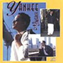
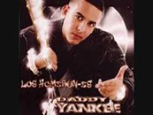
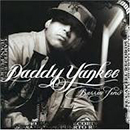
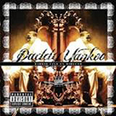
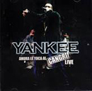
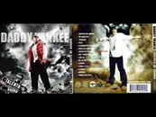
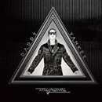
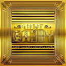

Ramón Luis Ayala Rodríguez (San Juan, 3 de febrero de 1977), conocido como Daddy Yankee, es un cantante, actor, productor discográfico, locutor de radio y empresario puertorriqueño. Diversos sectores de la crítica le consideran «El rey del reguetón», por ser uno de los responsables de haber popularizado ese género musical en América Latina y haberse consolidado como uno de los artistas más respetados e influyentes del circuito urbano latino. En julio de 2004 Daddy Yankee lanzó internacionalmente su tercer álbum de estudio, Barrio fino, que logró ubicarse en la primera posición en ventas de la lista Top Latin Albums de Billboard 20.
Historia
inicioHa obtenido diversos reconocimientos, entre los que se encuentran, once premios Billboard de la Música Latina en las categorías de artista y álbum latino del año en 2005, álbum y canción reguetón del año y artista del año en 2006, álbum latino y reguetón del año en 2008, un premio Spirit of Hope en 2009 y otros tres premios en 2011. También fue ganador de dos Premios MTV Latinoamérica en 2006 y 2007. Fue reconocido por la prestigiosa revista estadounidense Time como una de las 100 personas más influyentes del mundo en 2006 mientras que la cadena de noticias por cable CNN también lo nombró una de las celebridades hispanas más importantes e influyentes del mundo en 2009.
Últimas noticias
inicio"No vuelvo a Venezuela hasta que se vaya Maduro"
Daddy Yankee dio una conferencia de prensa en San Juan, Puerto Rico. Ahí el cantante declaró que no volverá a poner un pie en Venezuela. “En estos momentos no pienso ir hasta que se vaya Maduro del poder”, aseguró Yankee. El reguetonero ya había expresado su inconformidad contra el presidente venezolano, Nicolás Maduro. La última vez fue debido a que la canción “Despacito”, se usó para hacer propaganda política de la Asamblea Constituyente. A través de su cuenta de Instagram, el puertorriqueño dijo que Maduro se había apropiado "ilegalmente" de esta canción en una "burla" para el pueblo venezolano. “¿Qué se puede esperar de una persona que le ha robado tantas vidas a jóvenes soñadores y a un pueblo que lo que busca es un mejor futuro para sus hijos?”.
"Comparto esta enfermedad con una de mis hijas"
Hace unas semanas, Yankee debió suspender un concierto en Colombia aduciendo cuestiones personales. La noticia dio lugar a una serie de especulaciones sobre su salud que se esparcieron rápidamente por las redes sociales, por lo que él decidió que era momento de hablar abiertamente sobre el momento que está atravesando. El cantante de reggeaton contó en una nota que padece de prediabetes. "Yo desconocía lo que era el azúcar hasta que me noqueó. Dije: '¡Wow!, qué es esto, ¿es un chiste?'. Siempre tuve muchos mareos, sentía ganas de colapsar, no entendía nada. Después de muchos estudios me dijeron que esto era serio", apuntó. "Lo único que me deja tranquilo es que estoy guerreando junto a una de mis hijas, que también padece esta dolencia, y no la dejo sola en la batalla.
Grammy 2018: Luis Fonsi y Daddy Yankee nominados.

Las "cuatro grandes" categorías de nominados al Grammy fueron anunciadas el martes por la mañana (28 de noviembre) en CBS This Morning, con Childish Gambino, Luis Fonsi, Bruno Mars, Lorde y SZA encabezando disco, canción y álbum del año y las mejores carreras de nuevos artistas. La cantante Andra Day estuvo presente para ayudar a anunciar las nominaciones en cuatro categorías principales, comenzando con el récord del año, que enfrentará a "Despacito" en contra de algunos favoritos de los críticos como Gambino, JAY-Z y Kendrick Lamar.
Discografía
inicio| Nombre del Disco | Año | Integrantes | Discográfica |
|---|---|---|---|

No Mercy |
1995 |
|
White Lion and BM Records |
El Cartel: Los Intocables |
1997 |
|
El Cartel Production, Guatauba Productions, Jr. Music and Combo Records |
El Cartel II |
2001 |
|
El Cartel Records, Pina Records, Picol Enterprices |
El Cangri.com |
2002 |
|
VI Music |

Los Homerun |
2003 |
|
Los Cangris Music Inc., VI Music, Machete Music |

Barrio Fino |
2004 |
|
Universal Music Group y Cartel Records |

Barrio Fino en Directo |
2005 |
|
El Cartel Records, Interscope Records |

Ahora le toca al Cangri |
2005 |
|
El Cartel Records, The CSR Produccion's |

Talento de Barrio |
2008 |
|
El Cartel Records, The CSR Produccion's |

Mundial |
2010 |
|
El Cartel Records, Spiff TV, The CSR Produccion's |
Prestige |
2012 |
|
El Cartel Records, Spiff TV, The CSR Produccion's |

King Daddy |
2013 |
|
Universal Music Group |
King Daddy II |
2017 |
|
Universal Music Latino |
Último video
inicioLos puertorriqueños sean unidos. Daddy Yankee y Bad Bunny presentan el clip de Vuelve.